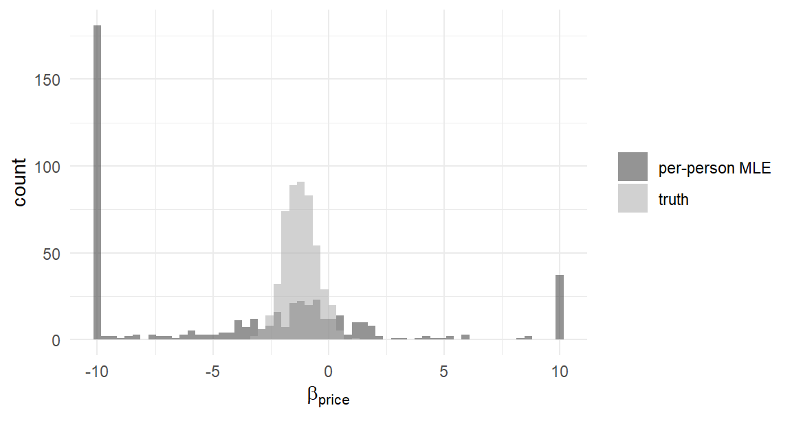
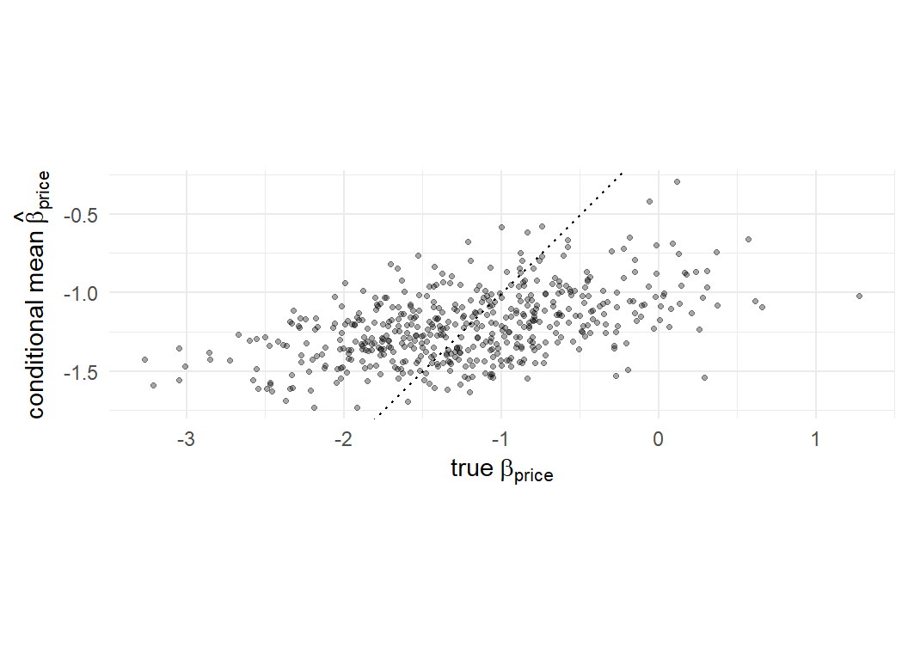

mixed <- readRDS("../data/mixed_study.rds")
d <- mixed$data
betas_true <- mixed$betas_true # the answer key: true beta_n, N x K
X <- model.matrix(~ brand + ram + screen + price, data = d)[, -1]
colnames(betas_true) <- colnames(X)
y <- d$choice
task_id <- cumsum(!duplicated(d[, c("id", "task")]))
id <- d$id
K <- ncol(X)14 The Limits of Likelihood
This short chapter is a hinge. Part II climbed as far as maximum likelihood reaches: the mixed MNL of Chapter 13 estimates an entire population of preferences — means, spreads, correlations — and does it well. But look carefully at what it delivers. Population parameters. Not people.
For many research questions, population parameters are the answer. For the questions that dominate applied choice modeling, they are not. A firm running the laptop study doesn’t stop at “price sensitivity has mean \(-1.2\) and standard deviation \(0.7\)”; it wants to know which respondents are the price-insensitive premium seekers, to size that segment’s demand for a new configuration, to simulate a market where each simulated buyer behaves like a particular real one (Chapter 21). Personalization, targeting, segment-level demand — the deliverables of modern conjoint practice (Allenby, Hardt, and Rossi 2019) — all need estimates of the individual \(\boldsymbol{\beta}_n\)’s. This chapter asks whether maximum likelihood can produce them. The answer — almost, awkwardly, without honest uncertainty — is the reason Part III exists.
14.1 Attempt One: A Likelihood Per Person
The direct approach: every respondent gave us eight choices; eight choices carry information about that person’s preferences; so run the Chapter 8 estimator separately on each person’s data. No population model at all — just 500 small MNL estimations.
Load the mixed-logit study saved in Chapter 13 (data, true individual coefficients, and the MSL estimates of the population parameters — everything this chapter needs):
loglik_mnl <- function(beta, y, X, task_id) { # @sec-mnl-mle, unchanged
V <- as.vector(X %*% beta)
Vmax <- ave(V, task_id, FUN = max)
eV <- exp(V - Vmax)
sum((V - Vmax - log(rowsum(eV, task_id)[task_id]))[y == 1])
}
fit_one_person <- function(n) {
rows <- which(id == n)
tid <- task_id[rows] - min(task_id[rows]) + 1
optim(rep(0, K), loglik_mnl, y = y[rows], X = X[rows, ], task_id = tid,
method = "BFGS", control = list(fnscale = -1, maxit = 200))$par
}
per_person <- t(sapply(1:500, fit_one_person))
colnames(per_person) <- colnames(X)Five hundred estimations later, compare the per-person price coefficients to the truth we smuggled out of the simulator:
summary_stats <- rbind(
truth = summary(betas_true[, "price"]),
per_person = summary(per_person[, "price"])
)
round(summary_stats, 1) Min. 1st Qu. Median Mean 3rd Qu. Max.
truth -3.3 -1.7 -1.2 -1.2 -0.8 1.3
per_person -1282.6 -27.3 -3.2 -23.3 -0.4 141.2The true price coefficients span a civilized range around \(-1.2\). The per-person estimates span tens or hundreds in both directions. This is not a bug in our code; it is the estimator working as designed on a task it cannot do. Eight choices among three alternatives simply do not contain enough information to pin down six utility parameters, and the failure has two textbook faces:
- Perfect separation. A respondent who happened to always choose the cheapest laptop is perfectly explained by \(\beta_{\text{price}} = -\infty\): their eight-task likelihood increases monotonically as the coefficient runs away, and
optim()chases it until stopped by the iteration cap. With \(T = 8\), such respondents are not rare accidents; they are a sizable fraction of any sample. - The incidental parameters problem. Even without separation, there is a deeper pathology: when the number of parameters grows with the number of observations (six new parameters per respondent), the usual asymptotic guarantees of Chapter 5 never engage. More respondents give you more parameters to estimate, not more information per parameter; \(T\) is what would need to grow, and \(T\) is fixed by the survey. Per-person MLE is inconsistent in the dimension that matters.1
df_plot <- rbind(
data.frame(beta = pmax(pmin(per_person[, "price"], 10), -10),
which = "per-person MLE"),
data.frame(beta = betas_true[, "price"], which = "truth")
)
ggplot(df_plot, aes(beta, fill = which)) +
geom_histogram(bins = 60, position = "identity", alpha = 0.6) +
scale_fill_manual(values = c("grey30", "grey70")) +
labs(x = expression(beta[price]), y = "count", fill = NULL)
Verdict: treating each person’s coefficients as free parameters is a dead end — not “needs more data” but structurally dead, because the survey’s \(T\) will never be large. Whatever produces individual estimates must let respondents share information.
14.2 Attempt Two: Condition on the Population
Which is exactly what the mixed logit already does — it just forgets to tell us about individuals. Recall its structure: \(\boldsymbol{\beta}_n\) drawn from a population distribution \(f(\boldsymbol{\beta}\mid \boldsymbol{\theta})\), then choices from an MNL given \(\boldsymbol{\beta}_n\). The MSL estimate \(\hat{\boldsymbol{\theta}}\) describes the population. But the model contains a sharper question we haven’t asked: given that person \(n\) made the specific choices \(\mathbf{y}_n\), which parts of the population distribution are they likely to sit in?
The answer is a conditional density, obtained — as in the E-step of Chapter 11, and this is no coincidence — by Bayes’ rule (Train 2009, Ch. 11):
\[ h(\boldsymbol{\beta}\mid \mathbf{y}_n, \hat{\boldsymbol{\theta}}) = \frac{ \Pr(\mathbf{y}_n \mid \boldsymbol{\beta}) \, f(\boldsymbol{\beta}\mid \hat{\boldsymbol{\theta}}) }{ \int \Pr(\mathbf{y}_n \mid \boldsymbol{\beta}') \, f(\boldsymbol{\beta}' \mid \hat{\boldsymbol{\theta}}) \, d\boldsymbol{\beta}' } \tag{14.1}\]
Read it with Chapter 11 eyes: \(f(\boldsymbol{\beta}\mid \hat{\boldsymbol{\theta}})\) plays the role the class shares played (what people are like in general); the sequence probability \(\Pr(\mathbf{y}_n \mid \boldsymbol{\beta})\) plays the class-specific likelihood (how well each candidate taste explains this person); the result upgrades the population distribution into a person-specific one. The continuous analogue of posterior class membership.
Computing it is a two-line addition to machinery we already ran. The MSL estimation of Chapter 13 already evaluates, for every person and every draw \(\boldsymbol{\beta}_n^{(r)}\) from the estimated population, the sequence probability \(P_{nr} = \Pr(\mathbf{y}_n \mid \boldsymbol{\beta}_n^{(r)})\) — note the subscripts: unlike the task-level \(P_{nt}\), this is the probability of person \(n\)’s whole sequence under draw \(r\), i.e. \(P_{nr} = e^{\ell_{nr}}\) in Chapter 13’s notation, and the weights \(P_{nr}/\sum_{r'} P_{nr'}\) we are about to compute are literally the \(w_{nr}\) of Equation 13.4 — the Bayes-rule object that chapter promised this one would pick up. The conditional mean of Equation 14.1 follows by a move we already own. Write it out: \[\mathrm{E}[\boldsymbol{\beta}\mid \mathbf{y}_n] = \int \boldsymbol{\beta}\, h(\boldsymbol{\beta}\mid \mathbf{y}_n, \hat{\boldsymbol{\theta}}) \, d\boldsymbol{\beta}= \frac{\int \boldsymbol{\beta}\, \Pr(\mathbf{y}_n \mid \boldsymbol{\beta}) \, f(\boldsymbol{\beta}\mid \hat{\boldsymbol{\theta}}) \, d\boldsymbol{\beta}}{\int \Pr(\mathbf{y}_n \mid \boldsymbol{\beta}') \, f(\boldsymbol{\beta}' \mid \hat{\boldsymbol{\theta}}) \, d\boldsymbol{\beta}'}\] Numerator and denominator are both expectations with respect to \(f\) — exactly the kind of integral Chapter 12 taught us to simulate: draw from \(f\), average the integrand. Simulate both with the same draws \(\boldsymbol{\beta}_n^{(r)} \sim f(\cdot \mid \hat{\boldsymbol{\theta}})\), cancel the common \(1/R\), and the conditional mean becomes a probability-weighted average of the draws — each candidate taste weighted by how well it explains the person:
\[ \hat{\boldsymbol{\beta}}_n = \frac{\sum_r P_{nr} \, \boldsymbol{\beta}_n^{(r)}}{\sum_r P_{nr}} \tag{14.2}\]
## rebuild the estimated-population draws and their weights, as in @sec-mixed-msl
theta_hat <- mixed$theta_hat # MSL estimates: means, log-sds
rc <- mixed$rc # which coefficients are random
Z <- mixed$Z # the fixed draws used in estimation
R <- dim(Z)[2]; n_id <- max(id)
id_of_task <- id[!duplicated(task_id)]
bar <- theta_hat[1:K]
s <- exp(theta_hat[(K+1):(K+length(rc))])
lseq <- matrix(0, n_id, R)
beta_draws <- array(rep(bar, each = n_id), c(n_id, R, K))
for (r in 1:R) {
betas <- matrix(rep(bar, each = n_id), n_id, K)
for (jj in seq_along(rc))
betas[, rc[jj]] <- betas[, rc[jj]] + s[jj] * Z[, r, jj]
beta_draws[, r, ] <- betas
V <- rowSums(X * betas[id, ])
Vmax <- ave(V, task_id, FUN = max)
eV <- exp(V - Vmax)
logP <- (V - Vmax - log(rowsum(eV, task_id)[task_id]))
lseq[, r] <- as.vector(rowsum(logP[y == 1], id_of_task))
}
M <- apply(lseq, 1, max)
w <- exp(lseq - M); w <- w / rowSums(w) # person-by-draw weights
beta_cond <- sapply(1:K, function(k) rowSums(w * beta_draws[, , k]))
colnames(beta_cond) <- colnames(X)The moment of judgment — conditional means against the true individual coefficients:
ggplot(data.frame(truth = betas_true[, "price"],
cond = beta_cond[, "price"]),
aes(truth, cond)) +
geom_abline(linetype = "dotted") +
geom_point(alpha = 0.35, size = 0.9) +
coord_equal() +
labs(x = expression(true~beta[price]),
y = expression(conditional~mean~hat(beta)[price]))
round(c(correlation = cor(betas_true[, "price"], beta_cond[, "price"]),
sd_truth = sd(betas_true[, "price"]),
sd_conditional = sd(beta_cond[, "price"])), 2) correlation sd_truth sd_conditional
0.49 0.71 0.22 Night and day against Attempt One. The conditional means track the truth person by person (correlation around 0.49), with no explosions — the population density in Equation 14.1 acts as a leash that separation cannot outrun: a respondent who always chose cheapest is now assigned a price coefficient in the plausible lower tail of the population, not at infinity.
And notice the figure’s second message: the cloud is flatter than the 45-degree line, and the conditional means’ spread is visibly smaller than the true spread. This compression is shrinkage — individual estimates pulled toward the population mean, more strongly the less information the person’s own choices carry. Far from a defect, shrinkage is the rational response to \(T = 8\): with thin personal data, the population is a better guide than the person’s noisy record, and the weighted average in Equation 14.2 makes precisely that trade.2 Shrinkage is about to become a central character: the hierarchical models of Part III produce it automatically, and Chapter 17 will lay this chapter’s estimates alongside theirs.
14.3 So What’s Missing?
If conditional means work this well, why does this book have three more parts? Because of what surrounds the point estimates. Line up the honest accounting:
No finite-sample inference. The conditional mean is a point. Its distribution Equation 14.1 would seem to offer more — but it is computed at the plug-in \(\hat{\boldsymbol{\theta}}\), as if the population parameters were known rather than estimated. Person-level uncertainty statements that account for population-level uncertainty require nesting the whole Equation 14.2 computation inside the sampling distribution of \(\hat{\boldsymbol{\theta}}\) — possible in principle, done by almost no one, offered by no standard software.
A two-step architecture with error at both steps. Step one: MSL, with its simulation bias (Chapter 12) and its own standard errors. Step two: conditional means, with fresh simulation error, treating step one as exact. The errors do not add up in any package’s output; they are simply not accounted.
And the first step itself strains. The Chapter 13 accounting: minutes per fit at three random coefficients with diagonal covariance; full covariance means Cholesky parameterizations, quadratically growing parameter counts, numerical gradients or heavy derivations, multiplied by the multiple-starts discipline. MSL works — we validated it — but every increment of model richness is paid for in optimization fragility and draws.
Now step back and look at the shape of what we built, because the shape is the punchline. To get individual estimates out of maximum likelihood, we bolted Bayes’ rule onto the side of the estimator: Equation 14.1 treats the population distribution as a prior and updates it with a person’s data. The natural question — the one Part III answers — is: if Bayes’ rule is doing the interesting work anyway, why not build the entire estimator out of it? Treat \(\boldsymbol{\theta}\) itself as uncertain, put the hierarchy \(\mathbf{y}_n \leftarrow \boldsymbol{\beta}_n \leftarrow \boldsymbol{\theta}\) inside one coherent posterior, and sample from that posterior directly. Every deficiency in the list above dissolves: person-level and population-level uncertainty arrive together, exactly, in finite samples; there is no two-step; and — the surprise of Chapter 17 — the computation gets easier, replacing a strained 9-parameter optimization with draws from simple conditional distributions. The tools are ready: the likelihood code of Part II is the engine, and the sampling skills of Chapter 2 are the fuel. What remains is the algorithm — Markov chain Monte Carlo — and that is Part III.
14.4 Key Learnings
- Population parameters are not the deliverable; individual-level \(\boldsymbol{\beta}_n\)’s are what targeting, segmentation, and market simulation consume. Maximum likelihood’s route to them is the subject of this chapter — and its limit.
- Per-person MLE fails structurally: perfect separation sends coefficients to infinity, and the incidental parameters problem (parameters growing with \(N\), information growing only with fixed \(T\)) voids the asymptotics. The failure histogram is not subtle.
- Conditioning works: Bayes’ rule (Equation 14.1) upgrades the estimated population distribution into person-specific distributions, and the conditional mean (Equation 14.2) is a probability-weighted average of draws — computable from quantities MSL already produced, the continuous sibling of Chapter 11’s posterior memberships.
- Conditional means track the truth strongly and exhibit shrinkage — rational compression toward the population mean under thin personal data. Never confuse the spread of conditional means with the spread of tastes.
- What likelihood cannot supply: honest person-level uncertainty (the plug-in ignores \(\hat{\boldsymbol{\theta}}\)’s error), a one-step architecture, and relief from MSL’s growing strain. The fix is to promote Bayes’ rule from bolt-on to foundation — Part III.
The incidental parameters problem dates to Neyman and Scott (1948); Train (2009) Section 11.4 discusses it in exactly our setting. It is why no serious practitioner estimates “fixed effects” utility coefficients from short choice panels.↩︎
The compression also means conditional means should not be treated as draws from the taste distribution — their variance understates the population’s by construction. Population statements come from \(\hat{\boldsymbol{\theta}}\); person statements from Equation 14.2; mixing up the two is a standard applied error (Train 2009, sec. 11.5).↩︎